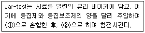
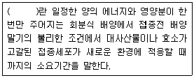
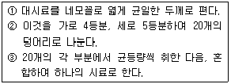
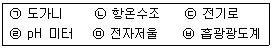
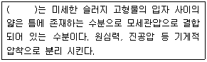

환경기능사 (2009-01-18 기출문제)
1과목: 대기오염방지
1. 다음 중 2차 대기오염물질이 아닌 것은?
- O3
- H2O2
- NH3
- PAN
(정답률: 68%)

2. 황성분이 1.8%인 중유를 10ton/hr로 연소하는 보일러에서 배기가스 중의 SO2를 CaCO3로 완전히 처리하는 경우에 이론상 필요한 CaCO3의 양은? (단, 중유 중의 S성분은 모두 SO2로 생성된다고 가정하며, Ca의 원자량은 40 이다.)
- 0.45 ton/hr
- 0.50 ton/hr
- 0.56 ton/hr
- 0.68 ton/hr
(정답률: 50%)
3. 다음 중 산성비에 관한 설명으로 가장 거리가 먼 것은?
- 독일에서 발생한 슈바르츠발트(검은 숲이란 뜻)의 고사 현상은 산성비에 의한 대표적인 피해이다.
- 바젤협약은 산성비 방지를 위한 대표적인 국제협약이다.
- 산성비에 의한 피해로는 파르테논 신전과 아크로폴리스 같은유적의 부식등이 있다.
- 산성비의 원인물질로 H2SO4, HCl, HNO3
(정답률: 88%)
4. 다음 중 로스엔젤레스형 스모그와 관련이 먼 것은?
- 광화학반응으로 발생한다.
- 기온이 21℃ 이상이고, 상대습도가 70% 이하일 때 잘 발생한다.
- 주오염원인은 자동차이다.
- 주로 새벽이나 초저녁 때 자주 발생한다.
(정답률: 70%)
5. 공장 굴뚝에서 배출되는 가스의 유속을 피토우관을 사용하여 측정하였더니 동압이 5mmH2O이었다. 이 굴뚝 배출가스의 유속은? (단, 피토우관 계수는 0.89, 굴뚝내의 습한 배출가스의 밀도는 1.3kg/m3이다.)
- 6.34m/s
- 6.85m/s
- 7.38m/s
- 7.73m/s
(정답률: 23%)
6. 다음 중 여과집진장치에 대한 설명으로 옳은 것은?
- 350℃ 이상의 고온의 가수처리에 적합하다.
- 여과포의 종류와 상관없이 가스상 물질도 효과적으로 제거할 수 있다.
- 압력손실이 약 20mmH2O 전후이며, 다른 집진장치에 비해 설치면적이 작고, 폭발성 먼지제거에 효과적이다.
- 집진원리는 직접 차단, 관성 충돌, 확산 등의 형태로 먼지를 포집한다.
(정답률: 53%)
7. 중력 집진장치의 집진효율 향상조건으로 틀린 것은?
- 침강실 내의 배기가스 기류는 균일해야 한다,
- 침강실 처리가스 속도가 작을수록 미립자가 포집된다.
- 침강실의 높이가 높고, 길이가 짧을수록 집진효율이 높아진다.
- 침강실 입구폭이 클수록 유속이 느려지며, 미세한 입자가 포집된다.
(정답률: 75%)
8. 열대 태평양 남미 해안으로부터 중태평양에 이르는 넓은 범위에서 해수면의 온도가 평균보다 0.5℃ 이상 높은 상태가 6개월 이상 지속되는 현상으로 스페인어로 아기예수를 의미하는 것은?
- 라니냐현상
- 업웰링현상
- 뢴트겐현상
- 엘니뇨현상
(정답률: 87%)
9. 전기집진장치에서 먼지의 전기저항을 낮추기 위하여 사용하는 방법으로 거리가 먼 것은?
- SO3 주입
- 수증기 주입
- NaCl 주입
- 암모니아가스 주입
(정답률: 50%)
10. 흡수공정으로 유해가스를 처리할 때, 흡수액이 갖추어야 할 조건으로 옳지 않은 것은?
- 용해도가 커야 한다.
- 점성이 작아야 한다.
- 휘발성이 커야 한다.
- 용매의 화학적 성질과 비슷해야 한다.
(정답률: 75%)
11. 다음 중 LNG의 주성분은?
- CO
- C2H2
- CH4
- C3H8
(정답률: 68%)
12. 탄소 18kg이 완전연소하는데 필요한 이론공기량(Sm3)은?
- 107
- 160
- 203
- 208
(정답률: 63%)
13. 사이클론의 효율향상에 관한 다음 설명 중 옳은 것은?
- 배기관경(내경)이 클수록 입경이 작은 먼지를 제거할수 있다.
- 입구의 한계유속내에서는 그 입구유속이 작을수록 효율이 높다.
- 고농도일 경우 직렬연결하여 사용하고, 응집성이 강한 먼지는 병렬연결하여 사용한다.
- 미세 먼지의 재비산 방지를 위해 스키머와 회전깃 등을 설치한다.
(정답률: 40%)
14. 다음 중 대기권에 대한 설명으로 옳은 것은?
- 대류권에서는 고도 1km 상승에 따라 약 90.℃ 높아진다.
- 대류권의 높이는 계절이나 위도에 관계없이 일정하다.
- 성층권에서는 고도가 높아짐에 따라 기온이 내려간다.
- 성층권에는 지상 20~30km 사이에 오존층이 존재한다.
(정답률: 74%)
15. 유해가스를 흡수액에 흡수시켜 제거하려고 한다. 흡수 효율에 영향을 미치는 인자로 가장 거리가 먼 것은?
- 기-액 접촉시간 및 접촉면적
- 흡수액에 대한 유해가스의용해도
- 유해가스의 분압
- 동반가스(carrier gas)의 활성도
(정답률: 44%)
2과목: 폐수처리
16. 수질오염공정시험기준상 유리섬유 거름종이법에 의한 부유물질(SS) 시험방법에 관한 설명으로 거리가 먼 것은?
- 정량범위는 5mg 이상이다.
- 1⑤~110℃ 건조가 안에서 6시간 건조시킨 후 무게를 정밀히 단다.
- 입경이 큰 고형물을 함유한 시료는 세게 흔들어 섞은 다음 2mm의 체를 통과한 시료를 가지고 실험한다,
- 사용한 여과기의 하부여과재는 중크롬산 황산용액에 넣어 침전물을 녹인 다음 정제수로 씻어 사용한다.
(정답률: 43%)
17. 수심이 4m아고, 체류시간이 3시간인 장방형 침전지의 수면적 부하는?
- 32m3/m2·일
- 30m3/m2·일
- 28m3/m2·일
- 26m3/m2·일
(정답률: 39%)
18. 염소주입에 의하여 폐수 중의 질소화합물과 반응하여 생성되는 물질은 무엇인가?
- 유리잔류질소
- 액체질소
- 트리할로메탄
- 클로라민
(정답률: 73%)
19. 경도(Hardness)에 관한 설명으로 틀린 것은?
- SO42-, NO3-, Cl-와 화합물을 이루고 있을 때 나타나는 경도를 영구경도라고 한다.
- 경도가 높은 물은 관로의 통수저항을 감소시켜 공업용수(섬유제지 등)로 적합하다.
- 탄산경도는 일시경도라고 한다.
- Na+은 경도를 유발하는 이온은 아니지만 그농도가 높을 때 경도와 비슷한 작용을 하므로 유사경도라 한다.
(정답률: 58%)
20. Formaldehyde(CH2O)의 완전산화 시 ThOD/TOC의 비는?
- 1.92
- 2.67
- 3.31
- 4
(정답률: 37%)
21. 활성슬러지공법에서 포기조내 SVI(Sludge Volumme Index)가 적정 값보다 높을 때 발생할 수 있는 현상으로 가장 적합한 것은?
- 슬러지의 밀도가 증가 한다.
- 슬러지 벌킹의 우려가 있다.
- 슬러지내 휘발성분이 감소한다.
- 슬러지는 아주 빨리 침강한다.
(정답률: 77%)
22. 최초유입폐수의 BOD는 250mg/L, 살수여상의 BOD 용적부하는 0.2kg/m3·day일 때, 유효깊이가 3m인 살수여상의 표면 부하율은? (단, 살수여상 유집전의 1차 침전지의 BOD 처리효율은 20% 이다.)
- 3m/day
- 4m/day
- 5m/day
- 6m/day
(정답률: 28%)
23. 일반적으로 약품교반시험(Jar-test)에 관한 설명 중 ( )안에 가장 적합한 것은?

- ① 1~5분 정도 100rpm, ② 10~15분간 40~50rpm
- ① 1시간 정도 40~50rpm, ② 1~5분 정도 600rpm
- ① 1~5분 정도 1200rpm, ② 1시간 정도 5000rpm
- ① 1시간 정도 150rpm, ②1~5분 정도 1200rpm
(정답률: 55%)
24. 활성슬러지공법에 있어서 MLSS의 설명을 가장 적합하게 표현한 것은?
- 최종 방류수 중의 부유물질
- 포기조 혼합액 중의 부유물질
- 최조 유입수 중의 부유물질
- 탈수 슬러지 중의 부유물질
(정답률: 75%)
25. 침전지 유입부에 설치하는 정류판(baffle)의 기능으로 가장 적합한 것은?
- 침전지 유입수의 균일한 분배와 분포
- 침전지내의 침사물 수집
- 바람을 막아 표면난류 방지
- 침전 슬러지의 재부상 방지
(정답률: 70%)
26. 물의 깊이에 따라 나타나는 수온성층에 해당되지 않는 것은?
- 수온약층
- 표수층
- 변수층
- 심수층
(정답률: 75%)
27. 다음 중 다른 살균방법에 비해 염소살균을 더 선호하는 이유로 가장 적합한 것은?
- 특정온도에서의 반응성 증가
- 부반응의 억제
- 잔류염소의 효과
- 인체에 대한 면역성 증가
(정답률: 83%)
28. 다음은 미생물의 성장단계에 관한 설명이다. ( )안에 알맞은 것은?

- 내생호흡기
- 지체기
- 감소성장기
- 대수성장기
(정답률: 61%)
29. 회전 원판식 생물학적 처리시설로 유량 1000m3/day, BOD200mg/L 로 유입될 경우 , BOD부하 (g/m2·day)는? (단, 회전판의 지름은 3m, 300매로 구성되어 있으며, 두께는 무시하며, 양면을 기준으로 한다.)
- 29.4
- 47.2
- 94.3
- 107.6
(정답률: 39%)
30. 다음 중 호기성 소화방식에 관한 특성으로 가장 거리가 먼 것은?
- 산화분해에 의해 혐기성소화보다 악취가 적은 편이다.
- 포기로 인하여 동력비가 많이 든다.
- 소화속도가 혐기성에 비해 누린 편이며, 효율은 온도변화에 상관없이 일정하다.
- 생성된 슬러지의 탈수성리 나쁜 편이다.
(정답률: 59%)
31. 다음 중 임호프콘(Inhoff cone)이 측정하는 항목으로 가장 적합한 것은?
- 전기음성도
- 분원성대장균군
- pH
- 침전물질
(정답률: 60%)
32. 산성폐수의 중화제로서 값이 저렴하여 널리 이용되지만 용해속도가 느리고 중화반응 시 슬러지가많이 발생하는 것은?
- NaOH
- Na2Co3
- Ca(OH)2
- KOH
(정답률: 48%)
33. 스토크스 법칙에 따라 침전하는 구형입자의 침전속도는 입자직경(d)과 어떤 관게가 있는가?
- d1/2에 비례
- d 에 비례
- d 에 반비례
- d2 에 비례
(정답률: 76%)
34. 물에 주입된 염소의 약 23%는 HOCl로, 77%는 해리된 OCl-로 존재하는 pH의 개략값으로 가장 적합한 것은?
- pH 3
- pH 5
- pH 8
- pH 11
(정답률: 43%)
35. 수중의 용존산소의 양은 일반적으로 온도가 상승함에 따라 어떻게 변화되는가?
- 감소한다.
- 증가한다.
- 변화없다.
- 증가 후 감소한다.
(정답률: 61%)
3과목: 폐기물처리
36. RDF(Refuse Derived Fuel)의 구비조건으로 가장 거리가 먼 것은?
- 열함량이 높고 동시에 수분함량이 낮아야 한다.
- 염소 함량이 높아야 한다,
- 미생물 분해가 가능하며, 재의 함량이 높아야 한다.
- 균질성이어야 한다.
(정답률: 60%)
37. 폐기물의 퇴비화 공정에서 발생된 생성물로 가장 거리가 먼 것은?
- NO3-
- CO2
- O3
- H2O
(정답률: 63%)
38. 폐기물을 관거 (Pipe-line)를 이용하여 수거하는 방법에 관한 설명으로 거리가 먼 것은?
- 폐기물 발생빈도가 높은 곳이 경제적이다.
- 잘못 투입된 물건은 회수하기 곤란하다.
- 5km 이상의 장거리 수공에 경제적이다.
- 큰 폐기물은 전처리하여야 한다.
(정답률: 66%)
39. 인구 300,000명의 도시에서 평균 1.5kg/인·일의 율로 쓰레기가 배출된다면 이 도시의 총 쓰레기 배출량은? ( 단, 쓰레기의 밀도는 400kg/m3 이다.)
- 1100 m3/일
- 1125 m3/일
- 1200 m3/일
- 1250 m3/일
(정답률: 56%)
40. 쓰레기 소각능력이 100kg/m2·hr 이고, 소각할 쓰레기의양이 5100kg/day 이다. 하루 8시간 소각로를 운전한다면 화격자의 면적(m2)은?
- 10.90
- 9.38
- 6.38
- 5.69
(정답률: 48%)
41. 폐기물 선별에 관한 설명 중 옳지 않은 것은?
- 영구자석을 이용한 선별방법은 별다른 동력이 소요되지 않으나 주입되는 폐기물의 양이 적어야 한다.
- 스크린 선별방법은 주로 큰 페기물로부터 후속 처리 장치를 보호하거나 재료회수를 위해 많이 사용한다,
- 스크린 선별방식 중 골재분리에는 회전식이 , 도시 폐기물선별에는 진동식이 일반적으로 많이 사용된다,
- 관성 선별방법은 중력이나 탄도학을 이용한 벙법이다.
(정답률: 56%)
42. 다음 폐기물의 감량화 방안 중 폐기물이 발생원에서 발생되지 않도록 사전에 조치하는 발생원 대책으로 거리가 먼 것은?
- 적정 저장량 관리
- 과대포장 사용안하기
- 철저한 분리수서 실시
- 폐기물로부터 회수에너지 이용
(정답률: 74%)
43. 지정폐기물의 정의 및 그 특징에 관한 설명 중 틀린 것은?
- 생활폐기물 중 환경부령으로 정하는 폐기물을 의미한다,
- 유독성 물질을 함유하고 있다.
- 2차 혹은 3차 환경오염의 유발 가능성이 있다.
- 일반적으로 고도의 처리기술이 요구된다.
(정답률: 61%)
44. 옥탄(C8 H18d1/2)연료의 이론적 완전연소 시 부피기준의 AFR(moles air/mple fuel)은?
- 12.5
- 41.5
- 59.5
- 74.5
(정답률: 44%)
45. 폐기물 수거 노선을 결정할 때 유의해야 할 사항으로 가장 거리가 먼 것은?
- 교통량이 적은 새벽에 수거한다.
- 언덕지역은 아래로 내려가면서 수거한다.
- 발생량이 적은 곳은 먼저 수거한다.
- 될 수 있는 한 한번 간곳은 다시 가지 않는다.
(정답률: 82%)
46. 압축비 1.67로 쓰레기를 압축하였다면 압축 전과 압축 후의 체적 감소율은 몇 % 인가? (단, 압축비 Vi / Vf 이다.)
- 약 20%
- 약 40%
- 약 60%
- 약 80%
(정답률: 37%)
47. 폐기물 분석 시료를 얻기 위한 시료의 축소방법 중 다음 보기에 해당하는 것은?

- 균일법
- 구획법
- 교호삽법
- 원추사분법
(정답률: 56%)
48. 다음 중 폐기물공정시험기준(방법)상 폐기물의 강열감량 및 유기물 함량을 측적하고자 할 때 사용되는 기구로만 옳게 묶여진 것은?

- (ㄱ), (ㄴ), (ㅂ)
- (ㄱ), (ㄹ), (ㅂ)
- (ㄴ), (ㄹ), (ㅁ)
- (ㄱ), (ㄷ), (ㅁ)
(정답률: 60%)
49. 슬러지를 구성하는 다음 수분 중 ( ) 안에 가장 알맞은 것은?

- 간극수
- 무관결합수
- 부착수
- 내부수
(정답률: 36%)
50. 폐수처리의 공정에서 발생과는 슬러지를 혐기성으로 소화처리 시키는 목적으로 거리가 먼 것은?
- 슬러지의 무게와 부피를 증가시킨다.
- 병원균을 통제할 수 있다.
- 이용가치가 있는 부산물을 얻을수 있다.
- 슬러지를 안정화 시킨다.
(정답률: 64%)
51. 인구 500,000명인 A도시의 폐기물 발생량 중 가연성은 20%, 불연성은 80% 잉T다. 1인당 평균 폐기물 발생량이 2.0kg/일 이고, 폐기물 운반차량의 적재유효용량이 4.5m3일 때, 이 중 가연성 폐기물 운반에 필요한 한 달 동안의 차량 운행회수는? (단, 가연성 폐기물의 밀도 3,000kg/m3, 한 달 30일 기준, 차량은 1대 기준)
- 223회
- 346회
- 415회
- 445회
(정답률: 31%)
52. 함수율이 20%인 폐기물을 건조시켜 함수율이 2.3%가 되도록 하려면 폐기물 1000kg당 증발시켜야 할 수분의 양은? (단, 폐기물 비중은 1.0)
- 약 127kg
- 약 158kg
- 약 181kg
- 약 192kg
(정답률: 50%)
53. 소각로 형식 중 회전로 (rotary kiln)가 가지는 장점으로 거리가 먼 것은?
- 공급장치의 설계에 있어 유연성이 있다.
- 비교적 열효율이 높다.
- 넓은 범위의 액상 또는 고상 폐기물을 각각 또는 섞어서 소각할 수 있다.
- 대체로 파쇄 등의 전처리 없이 폐기물의 주입이 가능하다.
(정답률: 48%)
54. 메탄올 4kg이 완전연소하는데 필요한 이론공기량은? (단, 표준상태 기준)
- 5 Sm3
- 10 Sm3
- 15 Sm3
- 20 Sm3
(정답률: 32%)
55. A지역의 쓰레기 수거량은 연간 3,500,000톤이다. 이 쓰레기를 5,000명이 수거한다면 수거능력은 얼마인가? (단, 1일 작업시간 8시간, 1년 작업일수 300일)
- 2.34 MHT
- 3.43 MHT
- 3.87 MHT
- 4.21 MHT
(정답률: 55%)
4과목: 소음 진동학
56. 소음 · 진동 환경공정시험기준상 소음의 배출허용기준을 측정할 때, 손으로 소음계를 잡고 측정할 경우에 소음계는 측정자의 몸으로부터 최소 얼마 이상 떨어져야 하는가?
- 0.1m 이상
- 0.3m 이상
- 0.5m 이상
- 1.5m 이상
(정답률: 63%)
57. 원음장 중 음원에서 거리가 2배로 되면 음압레벨이 6dB씩 감소되는 음장은?
- 근접음장
- 자유음장
- 잔향음장
- 확상음장
(정답률: 38%)
58. 두 개의 진동체의 고유진동수가 같을 때 한 쪽을 울리면 다른 쪽도 울리는 현상을 무엇이라 하는가?
- 공명
- 진폭
- 회절
- 굴절
(정답률: 76%)
59. 다음 중 배경진동의 보정없이 측정진동레벨이 대상진동레벨로 하는 것은 측정진동레벨이 배경진동레벨보다 최소 몇 dB 이상 큰 경우인가?
- 5
- 7
- 9
- 10
(정답률: 39%)
60. 귀의 내부구조 중 외이와 중이의 기압을 조정하는 기관에 해당하는 것은?
- 고막
- 유스타키오관
- 난원창
- 이소골
(정답률: 63%)